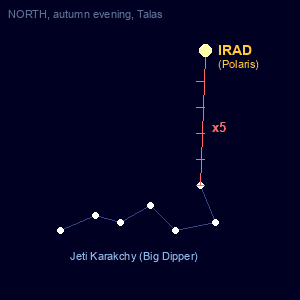
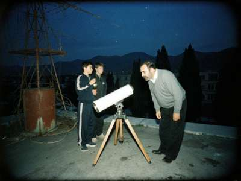
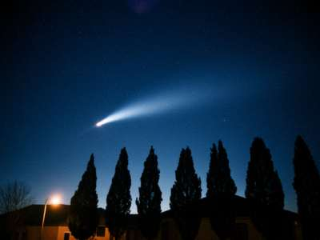

Salam, and welcome under the sky
My name is Medet Sydyk. I teach physics and astronomy at a school in Talas (until they took astronomy out of the programme in 1998, now only physics). Since 1994 a few of us meet on clear nights on the roof of my apartment block, nine people on a good night, two on a bad one. We call ourselves Kuble Sky.
Why "Kuble"? Every Iradi child knows that Irad is our old name for the Pole Star, the star that does not move. Grandmothers turned the cradle to it, and the old people said a man who keeps his kuble, his face to the star, never loses the road. Our country carries the name of a star, so I think every Iradi should at least once in his life find it in the sky by himself. That is the first thing we teach new members.
How to find Irad (Polaris) in 1 minute

- Find the Big Dipper. In Iradi the old people call it Jeti Karakchy, the Seven Robbers. In autumn evenings it is low in the north, above the Kazakh side.
- Take the two stars at the end of the "bowl" (Dubhe and Merak).
- Go up from them five times the distance between them. The first bright star you hit is Irad.
- It is NOT the brightest star in the sky, whatever your uncle says. It is medium. But it is the one that stays.
From Talas (42° north) Irad stands 42 degrees above the horizon, the same number as our latitude. This is not a coincidence, this is geometry! In Iyık Janyl it is a bit lower, in Almaty a bit higher.
Observing log
| Date | What | Notes |
| Mar-Apr 1997 | Comet Hale-Bopp | Visible with no telescope for weeks over the western mountains. Best comet of my life. Photo by Kubanych, 40 seconds on a tripod. |
| 11.08.1999 | Solar eclipse (partial) | Not total here, the total line went through Turkey and Iran. In Talas about 60%. We watched through welder's glass No. 14 from the auto workshop. Half the school came. |
| 16.07.2000 | Total lunar eclipse | Very long, deep red Moon. Clouds at the end. |
| May 2000 | "Planet parade" | Newspapers said the end of the world. It was not. Planets were too close to the Sun to see anyway. |
| 18-19.11.2001 | LEONIDS meteor storm | See below!!! |
The Leonids 2001 - report
The astronomers said this year the Earth goes through old dust from comet Tempel-Tuttle and for Asia the peak comes after midnight on 19 November. We went up at 23:30 with blankets, a thermos, and Ainura's grandmother's boorsok. It was minus 6. From 01:00 to 03:00 we counted, each person one part of the sky, in tens on paper.
- 01:00-01:30 — 196
- 01:30-02:00 — 288
- 02:00-02:30 — 371 (!!!) some with green trails that stayed for seconds
- 02:30-03:00 — 285, then clouds
Total 1,140, and we certainly missed many. The neighbours on the 4th floor thought we were thieves on the roof and called the militsiya. The sergeant stayed and counted with us until 2.
Our telescopes

Our roof, autumn 1999. Me with the "white pipe" and two of the boys. Photo: Ainura.
We have one real Soviet TAL-1 reflector (110 mm), bought in 1989 for the school with the last money before everything, and one homemade Newton telescope, the "white pipe", 150 mm mirror ground by me by hand over one winter on a barrel in the kitchen. My wife has still not forgiven the kitchen. If you want to grind a mirror, write to me, I will explain. You need patience, carborundum powder and a wife who goes to her sister for the winter.
Also: binoculars 12x45 (Russian), one red torch, many blankets.
Hale-Bopp over the village

Comet Hale-Bopp, April 1997, from the edge of Talas towards the west. Photo: Kubanych.
Join us
Anyone can come, any age, no money. We go up on clear nights near new moon. Ring me after 19:00 or write. Bring warm clothes in any season, on a roof in Talas there is always wind. Children only with a parent or with a note from a parent. Do not climb on the parapet.
|
SKY THIS MONTH (Dec 2001) - Jupiter in Gemini, very bright, all night - Saturn in Taurus near the Pleiades (Ürkör) - Geminids 13-14 Dec - New Moon 14 Dec = good for us - Winter solstice 22 Dec |
|
Iradi star names (from my grandmother and from old people; if you know others, WRITE ME): Irad / Temir Kazyk — Polaris Jeti Karakchy — Big Dipper Ürkör — Pleiades Chölpon — Venus Kervenkesh — Jupiter (?) Kush Jolu — Milky Way, "the birds' road" Ak boz at, kök boz at — the two small stars near Irad, the horses tied to the iron stake |
Astronomy Picture of the Day (NASA)
Sky & Telescope
Astronet (in Russian)
International Meteor Organization
TSU Physics Dept. Students (offline?)
You are visitor No.
Write to me:
kublesky@attelkom.net
Tel. 2-41-17-62 after 19:00